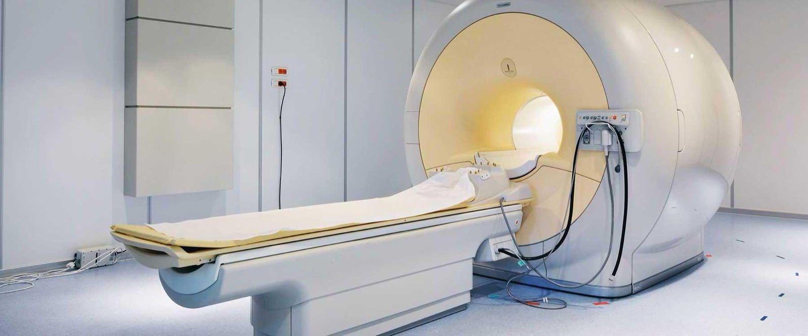

Servizi
Prevenzione, cura e riabilitazione, in tutta Italia.
Oltre 75 servizi specialistici erogati dalle strutture del Gruppo, organizzati in 11 aree cliniche, 29 famiglie di servizi e 24 città. Trova il servizio di cui hai bisogno e la struttura più vicina.

Nessun servizio corrisponde alla ricerca. Prova con un termine diverso o contattaci.
Non sai quale servizio ti serve? Usa l’orientamento guidato per zona e bisogno.
Mappa delle aree
Le aree cliniche del Gruppo.
Undici aree, ventinove famiglie di servizi e settantacinque schede: una struttura di lettura unica per orientarsi tra prevenzione, diagnosi, cura e riabilitazione.
Le prestazioni indicate come «ricorrenti» descrivono l’attività tipica della famiglia clinica. La disponibilità effettiva di esami, visite e trattamenti è verificata dalla singola struttura.
Area clinica 01
Prevenzione e medicina ambulatoriale
Check-up, certificazioni, medicina del lavoro e visite specialistiche in regime ambulatoriale.
6 servizi2 famiglie
Medicina preventiva e certificazioni
Check-up, idoneità sportiva e sorveglianza sanitaria per la prevenzione e il monitoraggio dello stato di salute.
- Check-up personalizzati
- Certificazioni medico-sportive
- Sorveglianza sanitaria
Ambulatori e poliambulatori
Visite specialistiche e prestazioni ambulatoriali erogate in poliambulatori e ambulatori dedicati.
- Visite specialistiche
- Esami strumentali
- Diagnostica ambulatoriale
Area clinica 02
Diagnostica e laboratorio
Imaging, laboratorio ed endoscopia per la diagnosi, il monitoraggio e la prevenzione.
3 servizi3 famiglie
Diagnostica per immagini
Radiologia, tomografia, risonanza magnetica, ecografia e senologia diagnostica con tecnologie aggiornate.
- Radiologia
- TAC
- Risonanza magnetica
- Ecografia
- Mammografia e tomosintesi
- Densitometria ossea
- Ortopantomografia
Laboratorio analisi
Prelievi ed esami ematochimici per la diagnosi, il monitoraggio e la prevenzione.
- Prelievi
- Esami ematochimici
- Analisi specialistiche
Endoscopia digestiva
Esami endoscopici diagnostici e operativi dell’apparato digerente.
- Gastroscopia
- Colonscopia
- Polipectomia endoscopica
Area clinica 03
Emergenza e area critica
Pronto soccorso, stabilizzazione e assistenza intensiva nei presidi ospedalieri del Gruppo.
2 servizi1 famiglia
Pronto soccorso e terapia intensiva
Accoglienza delle urgenze, stabilizzazione e assistenza intensiva nei presidi ospedalieri.
Area clinica 04
Specialità chirurgiche
Chirurgia generale e specialistica, ortopedia, urologia, oculistica e tecniche mini-invasive.
15 servizi7 famiglie
Chirurgia generale e robotica
Interventi addominali, bariatrici e mini-invasivi assistiti da robot chirurgico.
- Chirurgia addominale
- Chirurgia bariatrica
- Chirurgia mini-invasiva
Chirurgia ambulatoriale e day surgery
Interventi minori in regime ambulatoriale e di ricovero diurno.
- Day surgery
- Interventi minori
Ortopedia, traumatologia e chirurgia della mano
Patologie muscolo-scheletriche, esiti di traumi e chirurgia funzionale di mano e polso.
- Protesi di anca e ginocchio
- Chirurgia artroscopica
- Chirurgia della mano
- Traumatologia
Urologia
Diagnosi e cura delle patologie dell’apparato urinario e genitale maschile, con tecniche mini-invasive.
- Chirurgia robotica urologica
- Green laser
- Diagnostica urologica
Oculistica e otorinolaringoiatria
Salute della vista e dell’apparato uditivo, nasale e faringeo, con percorsi diagnostici e chirurgici.
- Chirurgia della cataratta
- Chirurgia refrattiva
- Visita oculistica
- Visita ORL
Cardiochirurgia e chirurgia vascolare
Chirurgia cardiaca e vascolare, con percorsi integrati di diagnosi e trattamento.
- Chirurgia cardiaca
- Chirurgia vascolare
- Diagnostica vascolare
Chirurgia plastica e ricostruttiva
Chirurgia ricostruttiva e plastica dei tessuti, in elezione e dopo traumi o interventi oncologici.
Area clinica 05
Specialità mediche
Cardiologia, gastroenterologia, neurologia e medicina interna per le patologie croniche e complesse.
8 servizi4 famiglie
Cardiologia
Prevenzione, diagnosi e cura delle patologie cardiovascolari, con diagnostica strumentale dedicata.
- Elettrocardiogramma
- Ecocardiografia
- Holter cardiaco
- Test da sforzo
Gastroenterologia, epatologia e metabolismo
Patologie digestive ed epatiche, diabete, obesità e disturbi del metabolismo.
- Visita gastroenterologica
- Visita epatologica
- Gestione del diabete
- Percorsi per l’obesità
Neurologia
Diagnosi e cura delle patologie del sistema nervoso centrale e periferico.
- Visita neurologica
- Diagnostica neurologica
Medicina interna e generale
Assistenza medica di base e gestione delle patologie internistiche complesse.
- Visita internistica
- Gestione delle patologie croniche
Area clinica 06
Ginecologia, senologia e fertilità
Salute della donna, prevenzione mammaria e percorsi per la fertilità di coppia.
3 servizi2 famiglie
Ginecologia e senologia
Prevenzione, diagnosi e cura delle patologie ginecologiche e mammarie.
- Visita ginecologica
- Ecografia ginecologica
- Screening mammario
- Diagnostica senologica
Procreazione medicalmente assistita
Percorsi diagnostici e terapeutici per la fertilità di coppia.
- Valutazione della fertilità
- Consulenza specialistica
Area clinica 07
Odontoiatria
Prevenzione, implantologia, ortodonzia, endodonzia e protesi per la salute orale.
6 servizi1 famiglia
Odontoiatria e salute orale
Prevenzione, implantologia, ortodonzia, endodonzia e protesi per la salute del cavo orale.
Area clinica 08
Riabilitazione
Percorsi motori, neurologici, cardiologici, respiratori e oncologici personalizzati.
14 servizi3 famiglie
Fisiatria e fisioterapia
Valutazione funzionale, prescrizione riabilitativa e trattamenti fisioterapici.
- Valutazione fisiatrica
- Fisioterapia manuale
- Terapia strumentale
Riabilitazione motoria e neurologica
Recupero funzionale dopo interventi ortopedici, traumi e patologie neurologiche.
Riabilitazione cardiologica, respiratoria e oncologica
Programmi dedicati a pazienti cardiologici, respiratori e oncologici, con supporto nutrizionale.
Area clinica 09
Salute mentale
Psichiatria, psicologia, disturbi psichici e riabilitazione psicosociale.
9 servizi2 famiglie
Psichiatria, psicologia e disturbi psichici
Diagnosi e cura dei disturbi psichiatrici dell’età adulta ed evolutiva, con supporto psicologico.
Riabilitazione psichiatrica e psicosociale
Recupero delle abilità personali e sociali per persone con disturbi psichici.
Area clinica 10
Assistenza, degenza e cure palliative
Cure palliative, assistenza domiciliare, dialisi, RSA e lungodegenza.
7 servizi3 famiglie
Cure palliative e assistenza domiciliare
Controllo dei sintomi, assistenza domiciliare e supporto sociale e spirituale alla persona e alla famiglia.
Dialisi
Trattamento sostitutivo della funzione renale in regime ambulatoriale e ospedaliero.
RSA e lungodegenza
Assistenza residenziale continuativa e ricovero per stabilizzazione e recupero dopo la fase acuta.
Area clinica 11
Terme e benessere
Cure termali, estetica e percorsi di benessere in contesti dedicati.
2 servizi1 famiglia
Terme e benessere
Cure termali, trattamenti estetici e percorsi di benessere.
Le aree cliniche in immagini
Dalla diagnosi alla riabilitazione.
Tecnologie, laboratori e competenze specialistiche: un percorso visivo attraverso i servizi erogati dalle strutture del Gruppo.

Il Gruppo GHC
Non sai a quale servizio rivolgerti?
Raccontaci di cosa hai bisogno: ti orientiamo verso la struttura e il percorso di cura più adatti.
Preferisci parlare con noi? +39 06 684891